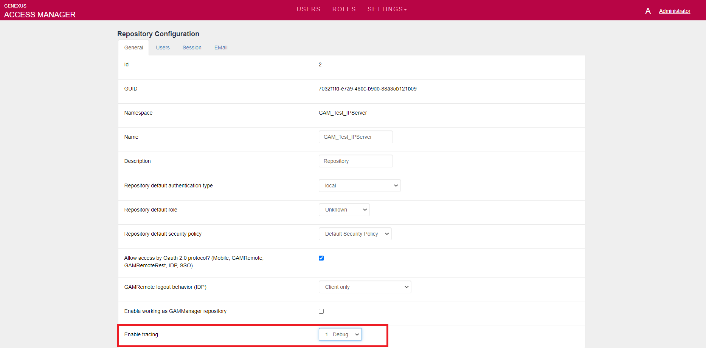
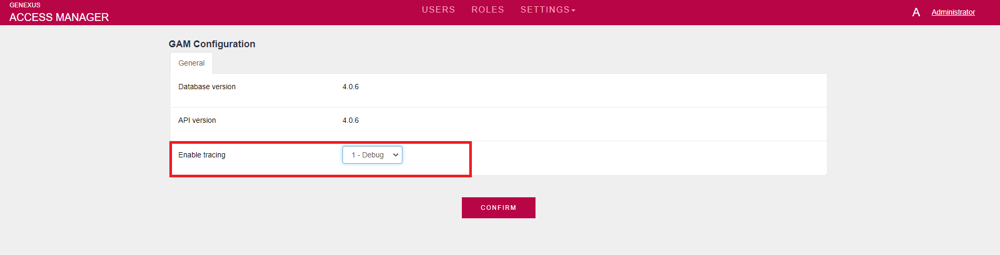

Applications that use GeneXus Access Manager can generate trace information in order to help while troubleshooting.
The administrator user of the GAM application can configure the Repository and GAM settings to generate trace information about the execution of the GAM libraries.
When running the GAM Web Backoffice, the Repository settings can be edited, and the Enable Tracing option can be configured to generate debug information by setting the value "1 - Debug":

Since GeneXus 17 Upgrade 5, tracing can be enabled with global scope in GAM Configurations. In this menu, the "enable tracing" property has to be "1 - Debug".

When the GAM API is used, the code to start generating trace in a given repository is as follows:
&Repository.EnableTracing = &EnableTracing //Repository is GAMRepository data type. &EnableTracing is based on GAMTracing domain.
The tracing information is added to the standard output.
For the Java generator, it can be found in Tomcat's stdout log file (it depends on the standard output of the servlets server).
For the NET generator, the following property has to be configured:
HowTo:Generate trace of GAM deploy Tool